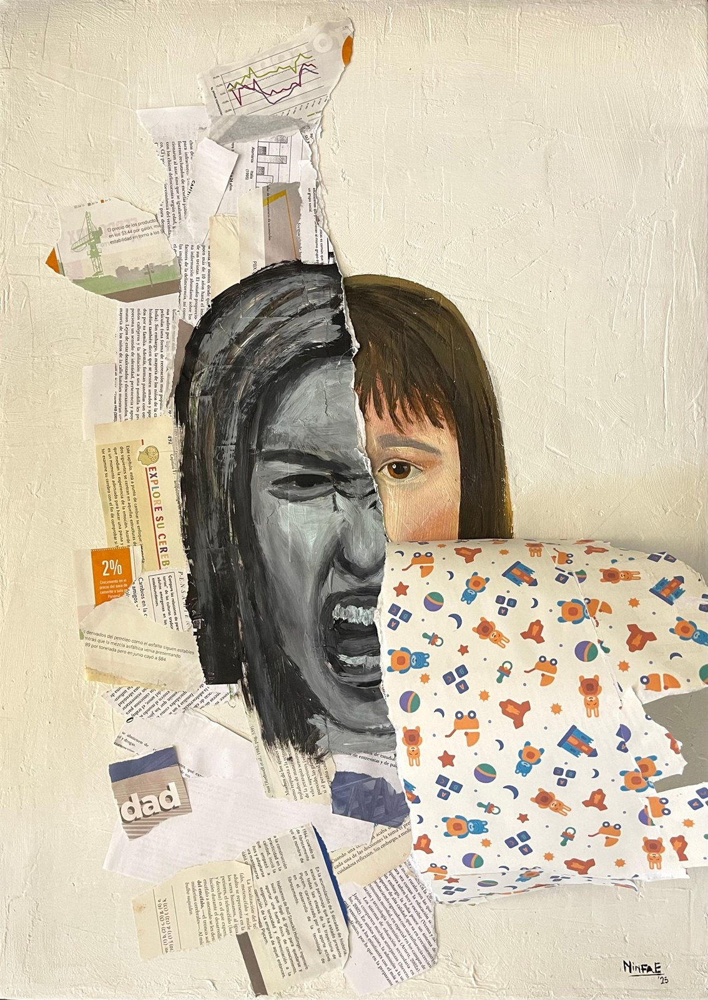
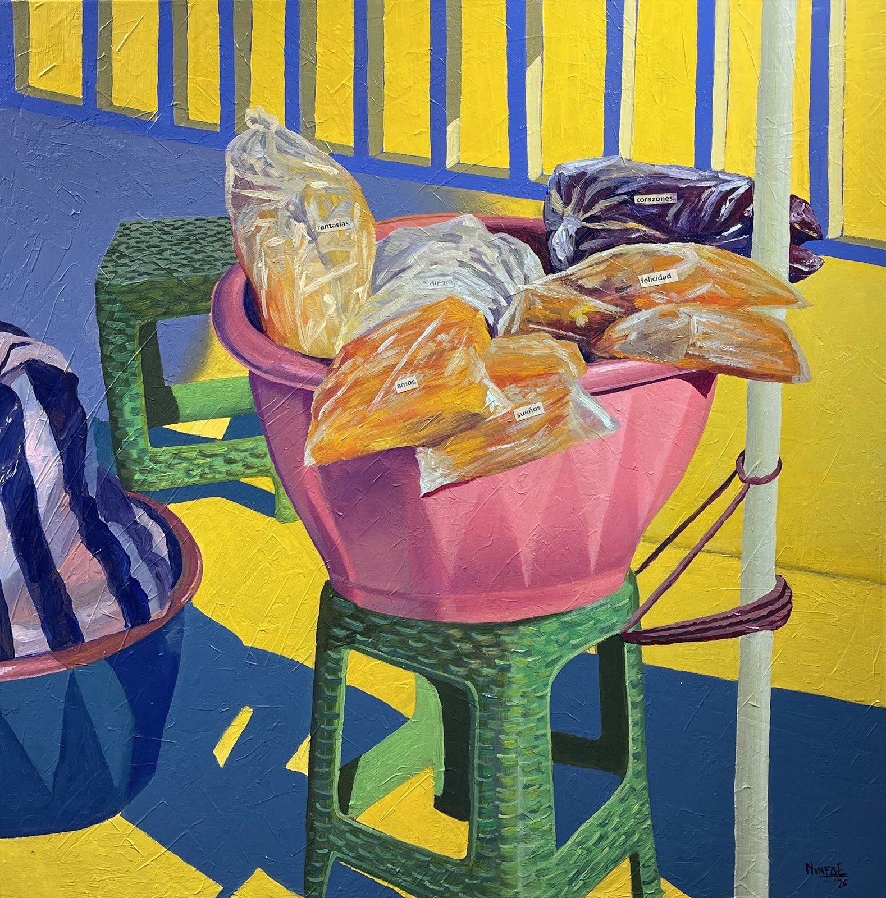
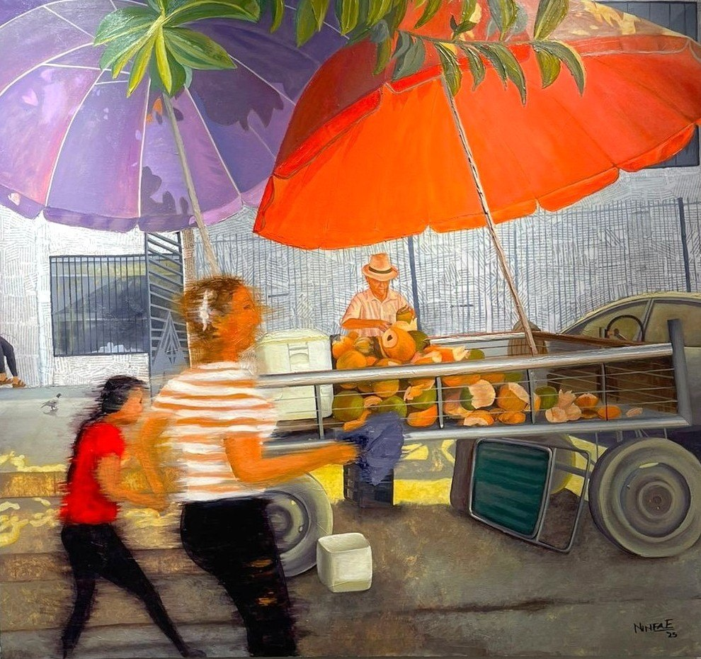
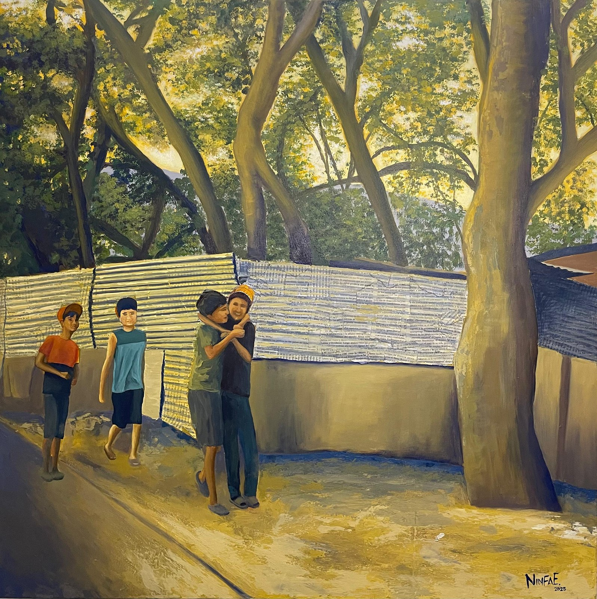
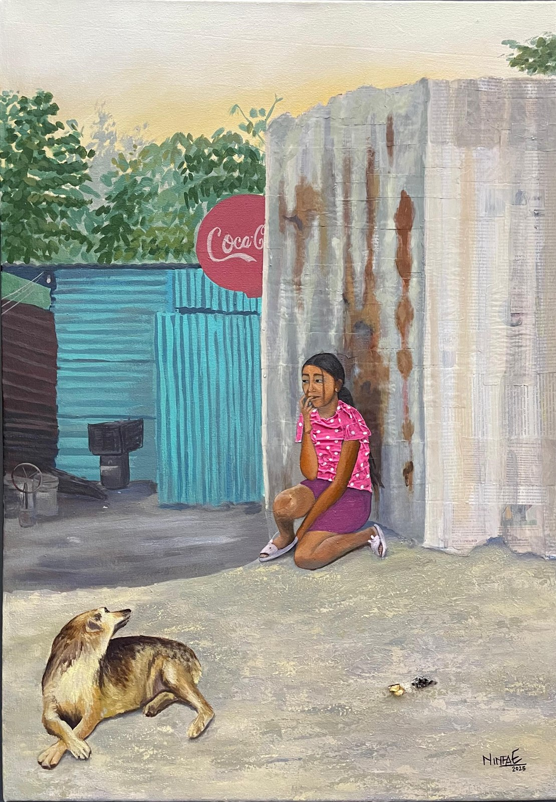
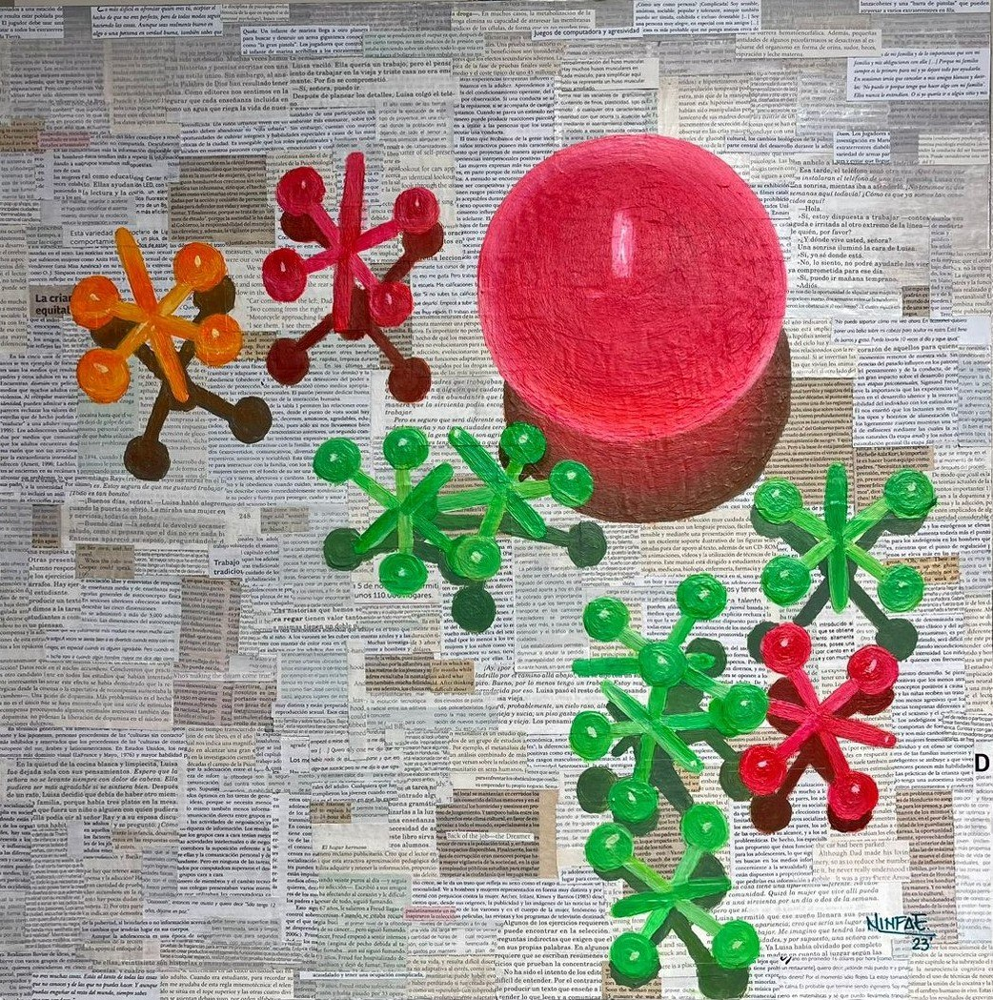
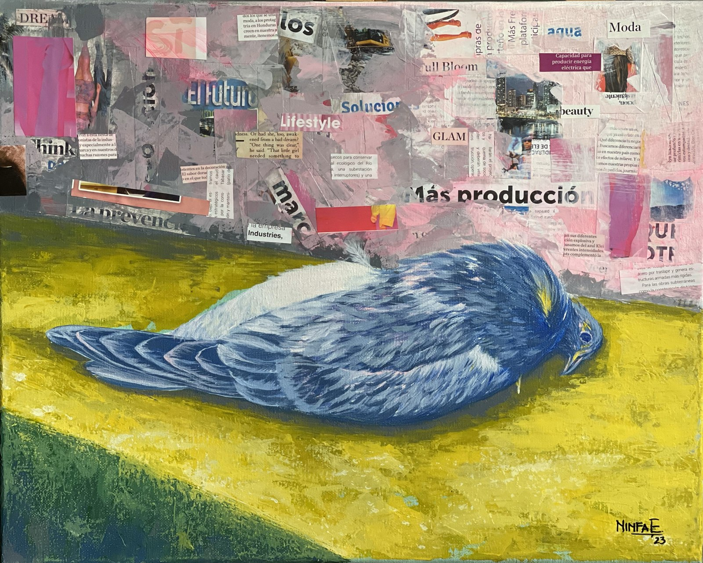
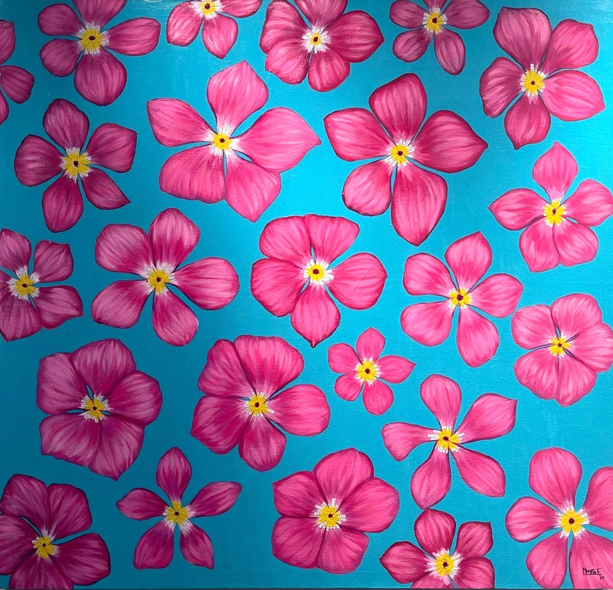

Works

Tierno Desborde
Selected for Te odio: el odio como estrategia de poder y control político y social, Centro Cultural de España, Costa Rica, 2025

Amor Para Llevar
Selected for Esencia de Mujer, Centro Cultural Sampedrano, 2026

Transitando en Resiliencia
Selected for the XXXV National Art Salon, Centro Cultural Sampedrano, 2025

Lazos de niñez al atardecer
Selected for El Arte y la Paz, Torre Banpaís, 2025

Serena compañía en la esperanza
Selected for El Arte y la Paz, Torre Banpaís, 2025

Vendedoras de Nances

Helados en la avenida
Honorable Mention, New Artist — XXXIII National Art Salon, Centro Cultural Sampedrano, 2023

Yaxis

Vida transitoria

Guajacas
XXXIV National Art Salon, Centro Cultural Sampedrano, 2024

Downtown at noon